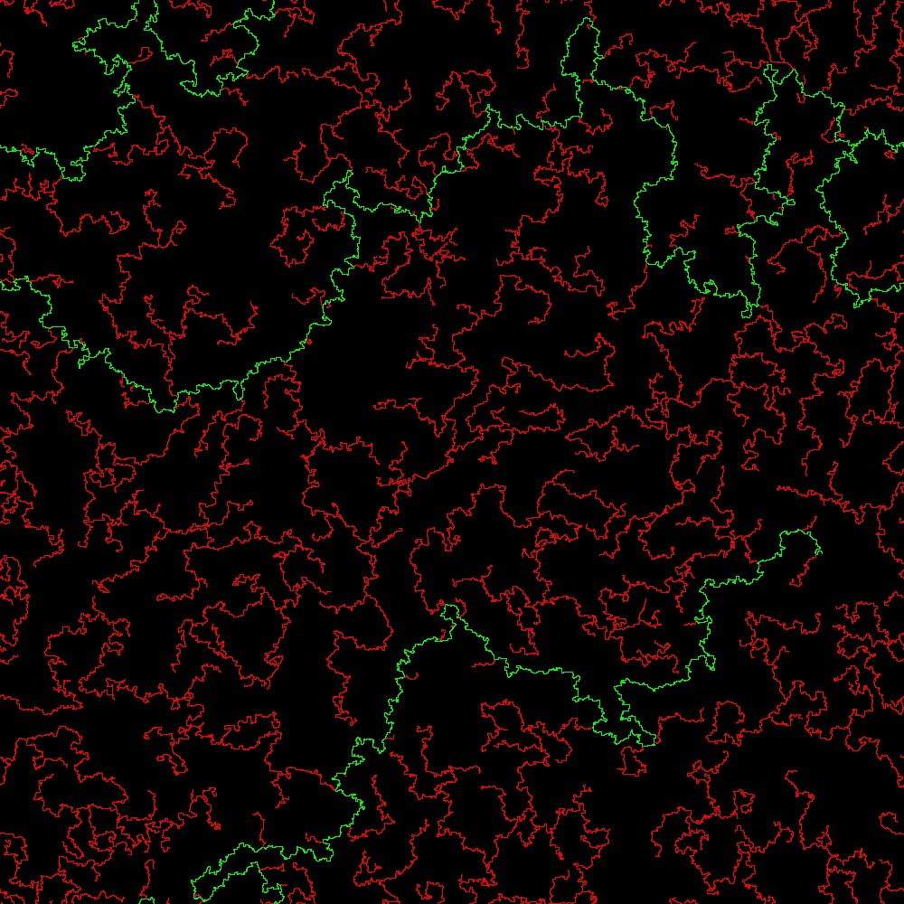
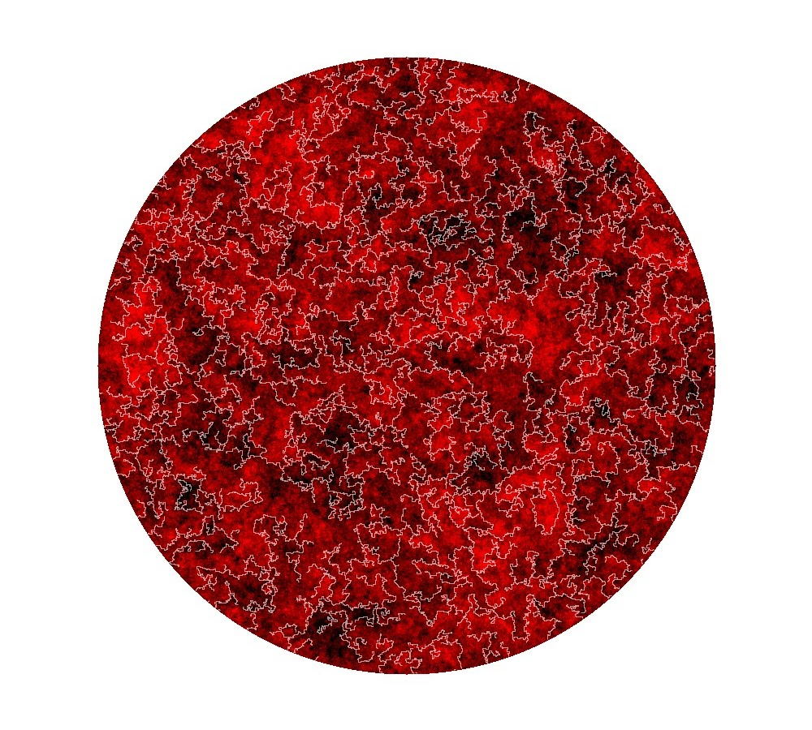
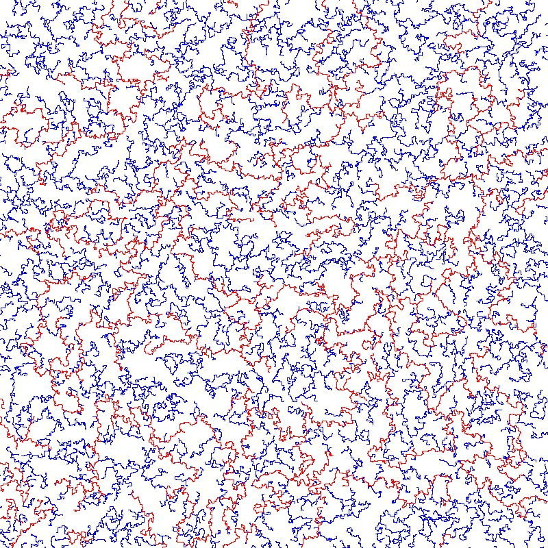
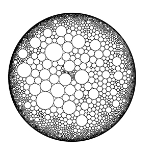
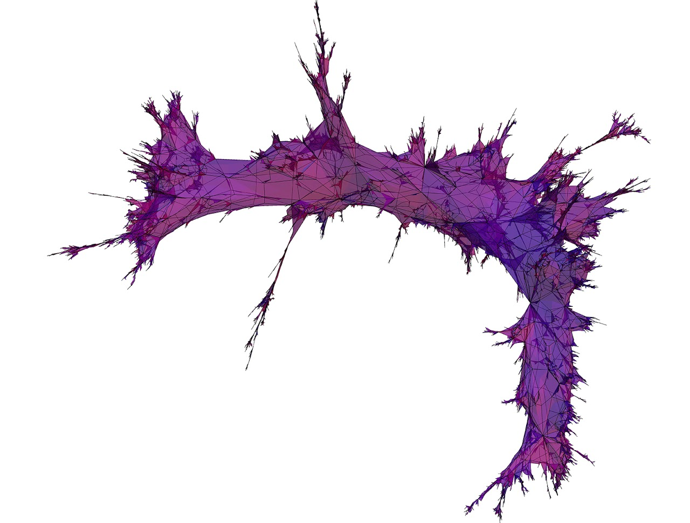
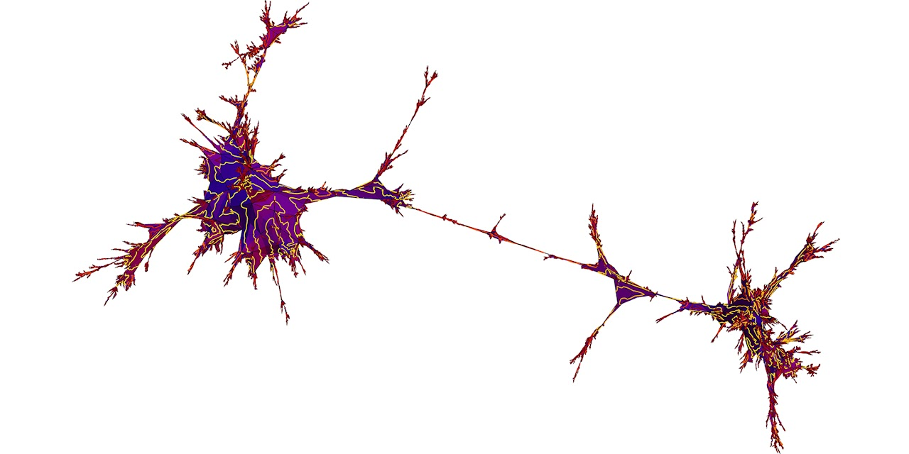
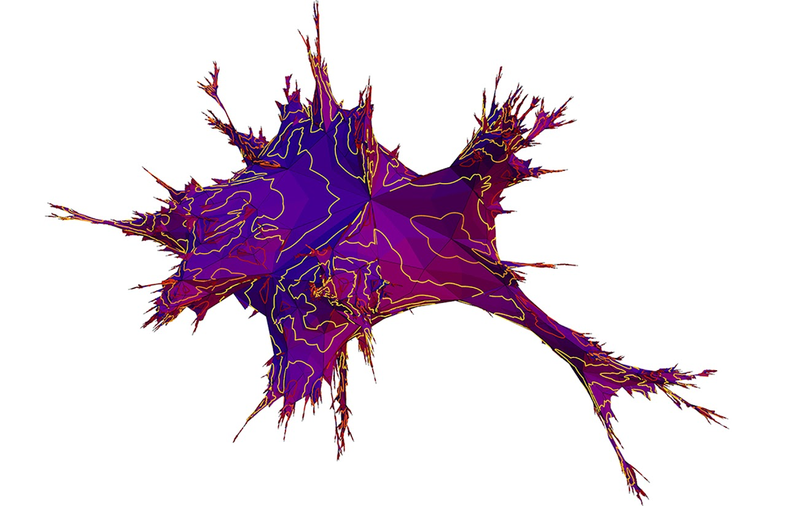

This is a new stochastic process I invented in a joint work with Arnab Sen, titled `Loop contracting random walk' in in this paper. This is a natural analogue of loop erased random walk (used to sample the uniform spanning tree, see figures below), but instead of erasing the loop, contract them. In the pictures, the loop contracting random walk is simulated in a 1500 by 1500 grid in the square lattice. The loops are not contracted but once a loop is formed, the walk exits from a randomly chosen edge leaving the loop. The colors represent the time when the edge is created (blue to red). An open question is to prove that this walk is `transient' in the Euclidean lattice. This has many consequences for the existence of weak limits of the minimum spanning arborescence.

Cycle rooted spanning forest on the torus, with the non-contractible loop highlighted in green.

This is a plot of a Gaussian free field on a disc of radius 380 coupled with a uniform spanning tree via the imaginary geometry coupling. This image is better viewed when clicked. The lighter colors represent lower values of the GFF while the darker colors represent the larger values (the values range from -11 to 11). The white curves behave as a flow lines of the GFF, as shown by Dubedat, Miller and Sheffield. The flow lines are also the scaling limits of uniform spanning trees as shown by Lawler, Schramm and Werner. We prove in a joint work with Nathanael Berestycki and Benoit laslier in this paper that the winding of the UST branches is given by the Gaussian free field coupled to it via the same imaginary geometry coupling. This proves a GFF fluctuations for various dimer models under some very general assumptions.

Left: This is a sample of 1000 branches of a uniform spanning tree in a 800*800 box. The branches are sampled according to Wilson's algorithm with the starting point randomly chosen for each branch. The red branches are the first 120 and the rest are blue. Right: A video of the sampling procedure of Wilson's algorithm illustrating the a lemma of Schramm which is sometimes called the magic lemma (beware there are more than one magic lemmas due to Schramm!). The lemma basically says that the first few branches of the UST sampled via Wilson's algorithm essentially contains all the information of the UST. Here the first 120 red branches are quite long and the remaining 880 branches sampled are short. Roughly, if we want an error of epsilon, we need to sample log(1/sqrt(epsilon)) many branches.

Circle packing of a unimodular hyperbolic triangulation simulated using Ken Stephensons circle packing software. Random walk on such a circle packing converges to the unit circle almost surely, with positive speed in the hyperbolic metric. Further the exit measure is nonatomic, has full support, and the Poisson boundary is realized as the unit circle. This is proved in a joint work with Omer Angel, Tom Hutchcroft and Asaf Nachmias in this paper Pic credit: Tom Hutchcroft.



FK weighted random maps (due to Jeremie Bettinelli and Benoit Laslier). Left: parameters q=2 (Ising model) and 10000 faces. Middle: copyright: Benoit Laslier and Jeremie Bettinelli. This corresponds to Liouville quantum gravity surface with parameter \sqrt{3}. Middle: Parameters q=9 and 10000 faces. One can see how the geometry is very "tree like" from this picture. Right: FK weighted random map with q=0.5 and 2500 faces. q<1 regime is quite open.